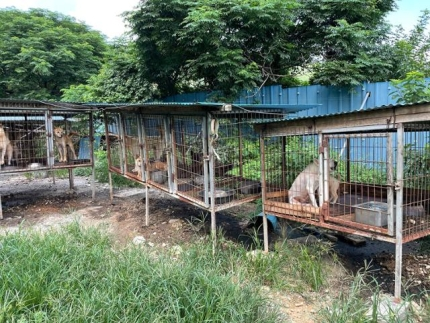
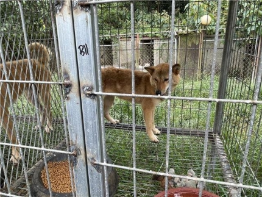
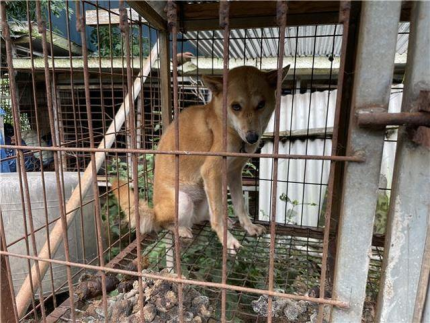
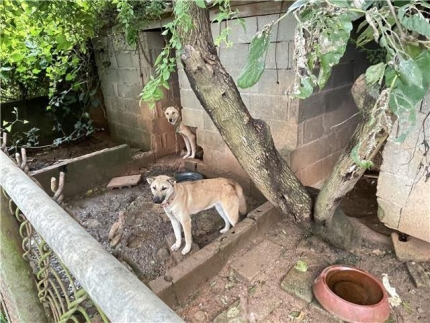
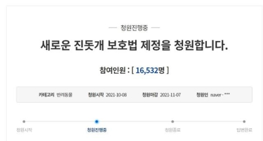

[Korea Daily] "Please create a new law to protect the natural monument catamaran"
Registration Date Author Life Attachment activitydata_05_01{kind=link}
▼Article Links▼
https://n.news.naver.com/article/469/0000635186
<29> "I can't stop the death of the camp dog" ... Pearl's Appeal
EditFrequently
The petition of the people of the Blue House, which began with the philosophy that the government will answer questions when the people ask, has been credited with being a forum for public debate with the participation of many citizens. But where and how should a speechless animal complain of resentment? We start an Ani Petition Corner where we make an opinion on behalf of the voices of the animals.
Pearl (left), found at an edible dog farm in Jindo County, Chunnam, has been living in a foster shelter since he was rescued. At first, I was very wary of people, but now I follow people well. HSI Offerings
I'm a 6-year-old Pearl of the Pearl of Natural Monument No. 53. At the end of August, the animal protection groups Life and the Humane Society International (HSI) closed an edible dog farm in Chunnam Jindo County, known as the Breakdown of the Jindo Dog, and confirmed my presence in the process of rescuing 65 of them. The farmer has been buying, breeding, slaughtering and selling gin mats and Jindo mix breeds of dogs for edible purposes for 20 years, and selling them in his own Bosintang house. Residents reported the dog farm to the police in early July after suffering from odor and noise. The farmer was caught as a current offender. At the time, the Jindo Army as well as the Cultural Properties Agency, which manages the natural monuments, received a lot of criticism when it became known that I lived on an edible dog farm and that it was difficult to ascertain even if it was sold as a bosintang.
Recently, something even more surprising has happened. In the course of the later identification of the objects, three natural monument catamarans (3 years old), autumn (4 years old) and moon (2 years old) were discovered (▶see related article: Three additional natural monuments found at the Jindo Dog Farm... Poor management Thomas). In addition, 1 unexamined dog (unexamined dog) that was found with me was found in the natural monument, followed by 6 unexamined dogs this time.
Life and HSI rescued 65 catamarans from an edible dog farm in Jindo County, Chunnam, at the end of August. HSI Offerings
According to the Jindo County and Cultural Properties Agency, there are about 10,000 catamarans living in Jindo, of which about 3,000 have been designated as natural monuments, and the remaining 7,000 are to be protected by natural monument reserve resources. They're all supposed to plant built-in recognition chips. The problem is that after registration, we don't track it because it's the private property of the guardian. According to Article 55 of the Cultural Properties Protection Act, when the owner of a natural monument changes, it must be reported to the Director of Cultural Properties, but until the animal organization has confirmed the dog's recognition chip, the Cultural Properties Agency and the Jindo County Administration were not aware of the existence of the edible catamaran farm.
A natural monument that was raised on a dog farm in Jindo County, Chunnam, is the fall of a jindo dog. Life Offerings
That's not all. According to data received from the Office of Cultural Properties during the State Affairs Audit by the Democratic Congressman in addition to the dedicated plane, farmers who grow natural monuments in Jindo are surveyed as having most of the carcasses of their catamarans self-processed, such as burials. This is a violation of the Waste Management Act. The disposal of pet carcasses in an ordinary household is classified as household waste under the Waste Management Act, as it should not be arbitrarily landfilled and incinerated
A natural monument found at an edible dog farm in Jindo County, Chunnam, where a jindo dog rod was raised in a floating ground. Bonja was closest to the slaughter site and had to watch the other dogs slaughter. After the rescue, the foster care center is slowly finding stability. Life Offerings
Moreover, although more than 10 natural monument caterpillars died in diseases or accidents a year on a farm, the Jindo County Administration did not even know the facts. The three farmers who raise the gin mats said that 68, 49, and 38 of them died last year, respectively, in the survey, but the number of deaths was so high that the Jindo Army confirmed and tracked them down, and it turned out that the farmers did not report the deaths of the camps from 2007 to last year.
According to Article 11 of the Guidelines for the Management of Dead Dogs in the Natural Monuments Progress of the Ministry of Cultural Properties, the death of a caterpillar must be identified, disinfected, and disposed of, but they did not comply with it. And there was no provision to punish them for not complying with it.
The natural monument Jin Dog Moon (front) that was raised on a dog farm in Jindo County, Chunnam. Life Offerings
In response, the Ministry of Cultural Heritage acknowledged that there was a problem, saying, "The Jindo Army could not afford to follow up due to a shortage of manpower," and that "even if we had done a good job of fact-finding every year, there would have been no omission of information in years."
Life posted a national petition to enact a new Mudfish Protection Act, and as of 14 October, more than 10,6000 people agreed. Blue House National Petition Homepage Capture
The animal protection organization Life posted a petition on the National Petition Board of the Blue House University for the enactment of a new Jin Mat Protection Act, arguing that "as a result of the 50-year implementation of the Korean Jin Mat Dog Protection and Cultivation Act, which was enacted with the aim of expanding the proliferation and distribution of gin cats, we have become edible, animal shows, and organic dogs and are dying," and that "we must create a new law to publicize, truly protect and preserve the gin cats." To date, more than 10,6,000 people have agreed. We strongly agree with this and call for the enactment of a new Mudcat Protection Act, which includes the following: Thorough management of the catamaran that has fallen from the screening, including the natural monument catamaran, and the establishment of appropriate guidelines rather than random burial after the death of the catamaran.
If you agree to the petition issued by Natural Monument No. 53 Jin-Dot Pearl Pearl, please click on the likes at the bottom of the portal site or click the empathy button under the original article Korea Daily.com article. If more than 500 people agree within 1 week of the article's publication, we will provide answers, advice and advice from the experts.